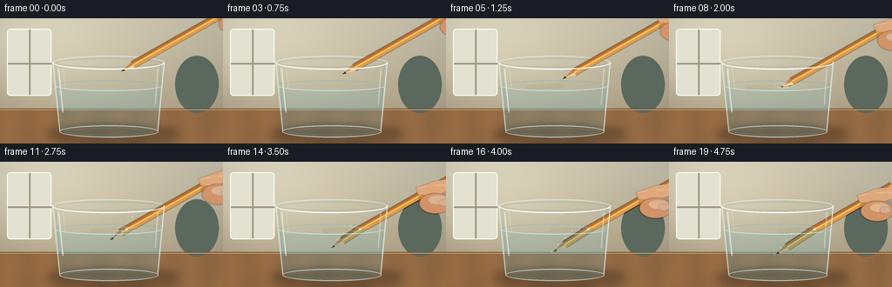
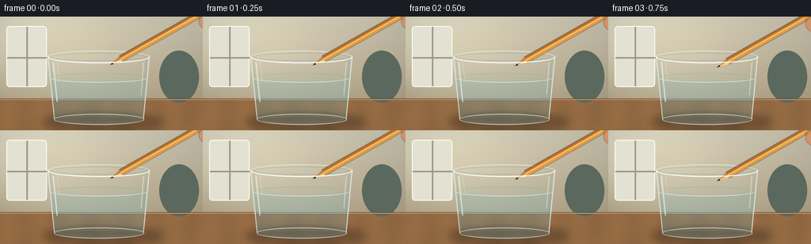

CODING AGENTS AS PIXEL WORLD MODELS
traex/GPT-5.6-Sol · phygen_073
点击播放 · 原生 RGB 像素
逐轮保存的候选
回放视频、检查图与代码变化。
每份候选均可单独播放。实际图片检查记录在下方工具轨迹中。
候选 01播放与检查图
点击播放 · 原生 RGB 像素


展开代码变化
--- 上一保存版本
+++ 本次保存版本
@@ -0,0 +1,229 @@
+from pathlib import Path
+import json, math
+import numpy as np
+from PIL import Image, ImageDraw, ImageFilter
+import artifact_io
+
+CASE_DIR = Path(__file__).resolve().parent
+spec = json.loads((CASE_DIR / 'task_spec.json').read_text())
+W,H,N = spec['width'], spec['height'], spec['frames']
+S=4
+w,h=W*S,H*S
+
+def sc(v): return int(round(v*S))
+def pts(seq): return [(sc(x),sc(y)) for x,y in seq]
+def ellipse(draw, box, **kw): draw.ellipse(tuple(sc(v) for v in box), **kw)
+def line(draw, xy, **kw):
+ if 'width' in kw: kw['width']=sc(kw['width'])
+ draw.line(pts(xy), **kw)
+def poly(draw, xy, **kw): draw.polygon(pts(xy), **kw)
+
+def smoothstep(x):
+ x=max(0,min(1,x)); return x*x*(3-2*x)
+
+def pencil_layer(tip, tail, width=7.2, underwater=False):
+ """Natural cedar pencil, graphite point at tip, hexagonal shaded body."""
+ im=Image.new('RGBA',(w,h),(0,0,0,0)); d=ImageDraw.Draw(im,'RGBA')
+ x0,y0=tip; x1,y1=tail
+ dx,dy=x1-x0,y1-y0; L=max(1,math.hypot(dx,dy)); ux,uy=dx/L,dy/L; px,py=-uy,ux
+ cone=min(15.5,L*.42)
+ base=(x0+ux*cone,y0+uy*cone)
+ # very subtle cast edge beneath pencil
+ ww=width/2
+ poly(d,[(base[0]+px*(ww+1),base[1]+py*(ww+1)),(x1+px*(ww+1),y1+py*(ww+1)),
+ (x1-px*(ww+1),y1-py*(ww+1)),(base[0]-px*(ww+1),base[1]-py*(ww+1))],fill=(45,26,13,80))
+ # painted/natural wooden hex body
+ body_cols=[(189,112,39,255),(225,154,67,255),(244,185,92,255)]
+ if underwater: body_cols=[(133,119,76,238),(177,150,85,238),(197,170,103,238)]
+ bands=[(-ww,-ww*.25,body_cols[0]),(-ww*.25,ww*.30,body_cols[2]),(ww*.30,ww,body_cols[1])]
+ for a,b,c in bands:
+ poly(d,[(base[0]+px*a,base[1]+py*a),(x1+px*a,y1+py*a),(x1+px*b,y1+py*b),(base[0]+px*b,base[1]+py*b)],fill=c)
+ # fine grain / lacquer highlight
+ line(d,[(base[0]+px*.25,base[1]+py*.25),(x1+px*.25,y1+py*.25)],fill=(255,221,148,135),width=.55)
+ line(d,[(base[0]-px*ww,base[1]-py*ww),(x1-px*ww,y1-py*ww)],fill=(94,51,24,190),width=.7)
+ # exposed sharpened wood cone
+ wood=(224,178,113,255) if not underwater else (174,157,119,245)
+ poly(d,[(x0,y0),(base[0]+px*ww,base[1]+py*ww),(base[0]-px*ww,base[1]-py*ww)],fill=wood)
+ # two facets on the sharpened cone
+ poly(d,[(x0+ux*3,y0+uy*3),(base[0]+px*ww,base[1]+py*ww),(base[0]+px*.05,base[1]+py*.05)],fill=(246,205,143,240) if not underwater else (189,174,137,235))
+ poly(d,[(x0+ux*3,y0+uy*3),(base[0]+px*.05,base[1]+py*.05),(base[0]-px*ww,base[1]-py*ww)],fill=(191,134,74,245) if not underwater else (147,131,99,235))
+ # graphite point
+ gl=4.2
+ gb=(x0+ux*gl,y0+uy*gl)
+ poly(d,[(x0,y0),(gb[0]+px*1.25,gb[1]+py*1.25),(gb[0]-px*1.25,gb[1]-py*1.25)],fill=(42,39,35,255) if not underwater else (53,65,62,245))
+ return im
+
+def render_frame(fi):
+ # warm photographic background with depth and vignette
+ yy,xx=np.mgrid[0:h,0:w]
+ X=xx/S; Y=yy/S
+ wall=np.zeros((h,w,3),dtype=np.float32)
+ top=np.array([208,200,177]); bot=np.array([175,161,133])
+ q=np.clip(Y/112,0,1)[...,None]
+ wall=top*(1-q)+bot*q
+ # soft window light from left and vignette
+ glow=np.exp(-((X-38)**2/(2*72**2)+(Y-34)**2/(2*53**2)))[...,None]
+ wall += glow*np.array([24,25,22])
+ vign=np.clip(((X-128)/170)**2+((Y-72)/112)**2,0,1)[...,None]
+ wall -= vign*np.array([24,20,15])
+ # wooden tabletop starts at 105, with smooth tonal grain
+ table=Y>=104
+ grain=4*np.sin(X*.15)+2*np.sin(X*.043+Y*.11)
+ table_rgb=np.stack([146+grain,105+grain*.55,67+grain*.28],axis=-1)
+ wall[table]=table_rgb[table]
+ base=Image.fromarray(np.uint8(np.clip(wall,0,255)),'RGB').convert('RGBA')
+ d=ImageDraw.Draw(base,'RGBA')
+ # defocused background shapes: window and ceramic jar
+ d.rounded_rectangle((sc(8),sc(12),sc(59),sc(89)),radius=sc(4),fill=(227,226,210,50),outline=(255,255,245,70),width=sc(1))
+ line(d,[(34,13),(34,88)],fill=(160,151,133,50),width=2)
+ line(d,[(9,52),(59,52)],fill=(160,151,133,45),width=2)
+ ellipse(d,(201,43,251,109),fill=(91,104,93,20))
+ # table back seam
+ line(d,[(0,104),(256,104)],fill=(106,76,50,75),width=1)
+ line(d,[(0,105),(256,105)],fill=(225,182,125,45),width=.7)
+ # glass shadow on tabletop
+ shadow=Image.new('RGBA',(w,h),(0,0,0,0)); sd=ImageDraw.Draw(shadow,'RGBA')
+ ellipse(sd,(54,122,205,145),fill=(49,34,21,95))
+ ellipse(sd,(69,126,184,140),fill=(42,31,22,90))
+ shadow=shadow.filter(ImageFilter.GaussianBlur(sc(5)))
+ base=Image.alpha_composite(base,shadow)
+
+ # glass back / transparent water volume
+ glass=Image.new('RGBA',(w,h),(0,0,0,0)); gd=ImageDraw.Draw(glass,'RGBA')
+ # faint glass cylinder tint
+ poly(gd,[(61,49),(188,49),(181,130),(69,130)],fill=(205,233,237,18))
+ # water body clipped by vessel geometry
+ poly(gd,[(63,77),(186,77),(180,129),(70,129)],fill=(123,194,205,58))
+ ellipse(gd,(70,119,180,137),fill=(101,177,190,52))
+ # rear rim
+ ellipse(gd,(60,43,189,59),fill=(235,250,248,18),outline=(237,249,246,150),width=sc(1.1))
+ ellipse(gd,(64,46,185,56),outline=(120,158,161,95),width=sc(.65))
+ # back waterline ellipse (faint full ellipse)
+ ellipse(gd,(63,71.5,186,83.5),fill=(170,225,227,26),outline=(111,181,188,115),width=sc(.8))
+ base=Image.alpha_composite(base,glass)
+
+ # pencil motion: smooth, careful descent
+ t=fi/(N-1)
+ s=smoothstep(t)
+ # tiny settling at the very end, no jump
+ tipx=139-31*s
+ tipy=61+50*s
+ ux,uy=.870,-.493
+ tail=(tipx+170*ux,tipy+170*uy)
+ water_y=77.5
+
+ # subtle surface reflection of shaft once it nears water
+ if tipy>68:
+ refl=Image.new('RGBA',(w,h),(0,0,0,0)); rd=ImageDraw.Draw(refl,'RGBA')
+ # reflected fragment on water surface to left of entry
+ depth=max(0,tipy-water_y)
+ # physical intersection if entered, else nearest point
+ if tipy>=water_y:
+ ti=(tipy-water_y)/(-uy)
+ ix=tipx+ux*ti
+ else: ix=tipx
+ line(rd,[(ix,water_y),(max(72,ix-42),water_y+2.2)],fill=(213,167,83,38),width=3.3)
+ refl=refl.filter(ImageFilter.GaussianBlur(sc(1.1)))
+ base=Image.alpha_composite(base,refl)
+
+ # underwater apparent/refracted portion, restricted to water inside glass
+ if tipy>water_y:
+ depth=tipy-water_y
+ ti=depth/(-uy)
+ ix=tipx+ux*ti
+ # apparent point is raised and shifted right by refraction
+ atip=(tipx+0.43*depth, water_y+depth/1.16)
+ # extend just beyond interface to avoid a seam
+ vx,vy=ix-atip[0],water_y-atip[1]; vl=math.hypot(vx,vy); vx/=vl; vy/=vl
+ uw=pencil_layer(atip,(ix+vx*17,water_y+vy*17),7.6,True)
+ mask=Image.new('L',(w,h),0); md=ImageDraw.Draw(mask)
+ poly(md,[(63,77),(186,77),(180,131),(70,131)],fill=255)
+ ellipse(md,(70,118,180,136),fill=255)
+ # softly integrate through water tint
+ alpha=uw.getchannel('A')
+ alpha=Image.composite(alpha,Image.new('L',(w,h),0),mask)
+ uw.putalpha(alpha)
+ base=Image.alpha_composite(base,uw)
+ # a second faint displaced ghost at curved front wall = cylindrical lensing
+ ghost=uw.copy(); ghost.putalpha(uw.getchannel('A').point(lambda a:int(a*.13)))
+ base=Image.alpha_composite(base,ghost)
+
+ # above-water physical pencil; crop at water plane only after entry
+ pencil=pencil_layer((tipx,tipy),tail,7.6,False)
+ if tipy>water_y:
+ pmask=Image.new('L',(w,h),255); pmd=ImageDraw.Draw(pmask)
+ pmd.rectangle((0,sc(water_y+.2),w,h),fill=0)
+ a=np.minimum(np.array(pencil.getchannel('A')),np.array(pmask)).astype(np.uint8)
+ pencil.putalpha(Image.fromarray(a,'L'))
+ base=Image.alpha_composite(base,pencil)
+
+ # hand/fingertips gently pinching shaft near upper-right
+ # grip tracks with the pencil but remains naturally near edge
+ grip_dist=133
+ gx,gy=tipx+ux*grip_dist,tipy+uy*grip_dist
+ hand=Image.new('RGBA',(w,h),(0,0,0,0)); hd=ImageDraw.Draw(hand,'RGBA')
+ if gy<57 and gx>190:
+ # soft hand shadow
+ ellipse(hd,(gx-5,gy-8,gx+39,gy+17),fill=(74,45,29,45))
+ # index finger from right edge over upper side of pencil
+ poly(hd,[(256,gy-17),(gx+15,gy-15),(gx-8,gy-7),(gx-5,gy+1),(gx+16,gy+2),(256,gy-3)],fill=(222,168,124,255))
+ line(hd,[(gx-6,gy-7),(gx+14,gy-10),(256,gy-10)],fill=(246,200,158,180),width=1.1)
+ # thumb pad below shaft
+ ellipse(hd,(gx-4,gy-1,gx+34,gy+23),fill=(209,147,105,255),outline=(153,94,65,150),width=sc(.7))
+ ellipse(hd,(gx+7,gy+2,gx+29,gy+12),fill=(237,184,143,150))
+ # nail hint
+ ellipse(hd,(gx+18,gy+6,gx+31,gy+14),fill=(232,176,143,160),outline=(176,119,94,100),width=sc(.5))
+ hand=hand.filter(ImageFilter.GaussianBlur(sc(.18)))
+ base=Image.alpha_composite(base,hand)
+
+ # front glass details, highlights and meniscus/ripples
+ front=Image.new('RGBA',(w,h),(0,0,0,0)); fd=ImageDraw.Draw(front,'RGBA')
+ # side contours
+ line(fd,[(60.5,50),(68.5,129)],fill=(225,244,244,180),width=1.2)
+ line(fd,[(188.5,50),(181,129)],fill=(231,247,246,190),width=1.2)
+ line(fd,[(63.5,53),(71,126)],fill=(89,142,148,75),width=.65)
+ line(fd,[(185,53),(179,127)],fill=(88,139,147,62),width=.65)
+ # bright left and right highlight streaks
+ line(fd,[(67,58),(72,108)],fill=(255,255,250,145),width=1.5)
+ line(fd,[(72,57),(75,82)],fill=(255,255,255,100),width=.6)
+ line(fd,[(181,58),(178,99)],fill=(255,255,255,118),width=.9)
+ # bottom thick glass ellipse
+ ellipse(fd,(68,123,182,137),outline=(220,242,242,160),width=sc(1.2))
+ ellipse(fd,(73,126,178,134),outline=(96,156,164,74),width=sc(.65))
+ # front half of rim to establish opening
+ # draw lower arc manually
+ arcbox=tuple(sc(v) for v in (60,43,189,59))
+ fd.arc(arcbox,0,180,fill=(250,255,252,215),width=sc(1.5))
+ # water meniscus front edge and contact ripples
+ wab=tuple(sc(v) for v in (63,71.5,186,83.5))
+ fd.arc(wab,0,180,fill=(223,248,248,175),width=sc(1.0))
+ if tipy>=water_y-3:
+ if tipy>=water_y:
+ ti=(tipy-water_y)/(-uy); ix=tipx+ux*ti
+ else: ix=tipx
+ # small concentric ripples centered at entry, strongest near contact then settle
+ amp=math.exp(-max(0,tipy-water_y)/28)
+ for rw,a in [(13,105),(25,62)]:
+ fd.ellipse((sc(ix-rw),sc(water_y-1.6-rw*.055),sc(ix+rw),sc(water_y+1.6+rw*.055)),outline=(225,251,250,int(a*amp)),width=sc(.65))
+ ellipse(fd,(ix-1.8,water_y-1.2,ix+1.8,water_y+1.2),fill=(244,255,252,150))
+ base=Image.alpha_composite(base,front)
+
+ # sparse underwater micro-bubbles once submerged
+ if tipy>84:
+ bubbles=Image.new('RGBA',(w,h),(0,0,0,0)); bd=ImageDraw.Draw(bubbles,'RGBA')
+ depth=tipy-water_y
+ for k in range(4):
+ bx=tipx+12+7*k+1.2*math.sin(fi*.7+k)
+ by=min(120,tipy-4-8*k-(fi%3)*.5)
+ r=.65+(.2*(k%2))
+ ellipse(bd,(bx-r,by-r,bx+r,by+r),outline=(235,255,255,130),width=sc(.45))
+ base=Image.alpha_composite(base,bubbles)
+
+ # final subtle optical sheen and downsample
+ rgb=base.convert('RGB').resize((W,H),Image.Resampling.LANCZOS)
+ arr=np.array(rgb)
+ return arr
+
+frames=np.stack([render_frame(i) for i in range(N)],axis=0).astype(np.uint8)
+artifact_io.save(frames, CASE_DIR)
+print(f'Saved {frames.shape} RGB frames to {CASE_DIR}')
可观测工具轨迹
实际执行的命令与返回图片。
命令 1exit 0
/bin/bash -lc "cat prompt.txt && printf '\\n---RULES---\\n' && cat GENERATION_RULES.md && printf '\\n---SPEC---\\n' && cat task_spec.json"
命令 2exit 0
/bin/bash -lc "find . -maxdepth 2 -type f -printf '%p\\n' | sort"
命令 3exit 0
/bin/bash -lc 'cat artifact_io.py'
命令 4exit 1
/bin/bash -lc "cat > generate.py <<'PY'
from pathlib import Path
import json, math
import numpy as np
from PIL import Image, ImageDraw, ImageFilter
import artifact_io
CASE_DIR = Path(__file__).resolve().parent
spec = json.loads((CASE_DIR / 'task_spec.json').read_text())
W,H,N = spec['width'], spec['height'], spec['frames']
S=4
w,h=W*S,H*S
def sc(v): return int(round(v*S))
def pts(seq): return [(sc(x),sc(y)) for x,y in seq]
def ellipse(draw, box, **kw): draw.ellipse(tuple(sc(v) for v in box), **kw)
def line(draw, xy, **kw):
if 'width' in kw: kw['width']=sc(kw['width'])
draw.line(pts(xy), **kw)
def poly(draw, xy, **kw): draw.polygon(pts(xy), **kw)
def smoothstep(x):
x=max(0,min(1,x)); return x*x*(3-2*x)
def pencil_layer(tip, tail, width=7.2, underwater=False):
\"\"\"Natural cedar pencil, graphite point at tip, hexagonal shaded body.\"\"\"
im=Image.new('RGBA',(w,h),(0,0,0,0)); d=ImageDraw.Draw(im,'RGBA')
x0,y0=tip; x1,y1=tail
dx,dy=x1-x0,y1-y0; L=max(1,math.hypot(dx,dy)); ux,uy=dx/L,dy/L; px,py=-uy,ux
cone=min(15.5,L*.42)
base=(x0+ux*cone,y0+uy*cone)
# very subtle cast edge beneath pencil
ww=width/2
poly(d,[(base[0]+px*(ww+1),base[1]+py*(ww+1)),(x1+px*(ww+1),y1+py*(ww+1)),
(x1-px*(ww+1),y1-py*(ww+1)),(base[0]-px*(ww+1),base[1]-py*(ww+1))],fill=(45,26,13,80))
# painted/natural wooden hex body
body_cols=[(189,112,39,255),(225,154,67,255),(244,185,92,255)]
if underwater: body_cols=[(133,119,76,238),(177,150,85,238),(197,170,103,238)]
bands=[(-ww,-ww*.25,body_cols[0]),(-ww*.25,ww*.30,body_cols[2]),(ww*.30,ww,body_cols[1])]
for a,b,c in bands:
poly(d,[(base[0]+px*a,base[1]+py*a),(x1+px*a,y1+py*a),(x1+px*b,y1+py*b),(base[0]+px*b,base[1]+py*b)],fill=c)
# fine grain / lacquer highlight
line(d,[(base[0]+px*.25,base[1]+py*.25),(x1+px*.25,y1+py*.25)],fill=(255,221,148,135),width=.55)
line(d,[(base[0]-px*ww,base[1]-py*ww),(x1-px*ww,y1-py*ww)],fill=(94,51,24,190),width=.7)
# exposed sharpened wood cone
wood=(224,178,113,255) if not underwater else (174,157,119,245)
poly(d,[(x0,y0),(base[0]+px*ww,base[1]+py*ww),(base[0]-px*ww,base[1]-py*ww)],fill=wood)
# two facets on the sharpened cone
poly(d,[(x0+ux*3,y0+uy*3),(base[0]+px*ww,base[1]+py*ww),(base[0]+px*.05,base[1]+py*.05)],fill=(246,205,143,240) if not underwater else (189,174,137,235))
poly(d,[(x0+ux*3,y0+uy*3),(base[0]+px*.05,base[1]+py*.05),(base[0]-px*ww,base[1]-py*ww)],fill=(191,134,74,245) if not underwater else (147,131,99,235))
# graphite point
gl=4.2
gb=(x0+ux*gl,y0+uy*gl)
poly(d,[(x0,y0),(gb[0]+px*1.25,gb[1]+py*1.25),(gb[0]-px*1.25,gb[1]-py*1.25)],fill=(42,39,35,255) if not underwater else (53,65,62,245))
return im
def render_frame(fi):
# warm photographic background with depth and vignette
yy,xx=np.mgrid[0:h,0:w]
X=xx/S; Y=yy/S
wall=np.zeros((h,w,3),dtype=np.float32)
top=np.array([208,200,177]); bot=np.array([175,161,133])
q=np.clip(Y/112,0,1)[...,None]
wall=top*(1-q)+bot*q
# soft window light from left and vignette
glow=np.exp(-((X-38)**2/(2*72**2)+(Y-34)**2/(2*53**2)))[...,None]
wall += glow*np.array([24,25,22])
vign=np.clip(((X-128)/170)**2+((Y-72)/112)**2,0,1)[...,None]
wall -= vign*np.array([24,20,15])
# wooden tabletop starts at 105, with smooth tonal grain
table=Y>=104
grain=4*np.sin(X*.15)+2*np.sin(X*.043+Y*.11)
table_rgb=np.stack([146+grain,105+grain*.55,67+grain*.28],axis=-1)
wall[table]=table_rgb[table]
base=Image.fromarray(np.uint8(np.clip(wall,0,255)),'RGB').convert('RGBA')
d=ImageDraw.Draw(base,'RGBA')
# defocused background shapes: window and ceramic jar
d.rounded_rectangle((sc(8),sc(12),sc(59),sc(89)),radius=sc(4),fill=(227,226,210,50),outline=(255,255,245,70),width=sc(1))
line(d,[(34,13),(34,88)],fill=(160,151,133,50),width=2)
line(d,[(9,52),(59,52)],fill=(160,151,133,45),width=2)
ellipse(d,(201,43,251,109),fill=(91,104,93,20))
# table back seam
line(d,[(0,104),(256,104)],fill=(106,76,50,75),width=1)
line(d,[(0,105),(256,105)],fill=(225,182,125,45),width=.7)
# glass shadow on tabletop
shadow=Image.new('RGBA',(w,h),(0,0,0,0)); sd=ImageDraw.Draw(shadow,'RGBA')
ellipse(sd,(54,122,205,145),fill=(49,34,21,95))
ellipse(sd,(69,126,184,140),fill=(42,31,22,90))
shadow=shadow.filter(ImageFilter.GaussianBlur(sc(5)))
base=Image.alpha_composite(base,shadow)
# glass back / transparent water volume
glass=Image.new('RGBA',(w,h),(0,0,0,0)); gd=ImageDraw.Draw(glass,'RGBA')
# faint glass cylinder tint
poly(gd,[(61,49),(188,49),(181,130),(69,130)],fill=(205,233,237,18))
# water body clipped by vessel geometry
poly(gd,[(63,77),(186,77),(180,129),(70,129)],fill=(123,194,205,58))
ellipse(gd,(70,119,180,137),fill=(101,177,190,52))
# rear rim
ellipse(gd,(60,43,189,59),fill=(235,250,248,18),outline=(237,249,246,150),width=sc(1.1))
ellipse(gd,(64,46,185,56),outline=(120,158,161,95),width=sc(.65))
# back waterline ellipse (faint full ellipse)
ellipse(gd,(63,71.5,186,83.5),fill=(170,225,227,26),outline=(111,181,188,115),width=sc(.8))
base=Image.alpha_composite(base,glass)
# pencil motion: smooth, careful descent
t=fi/(N-1)
s=smoothstep(t)
# tiny settling at the very end, no jump
tipx=139-31*s
tipy=61+50*s
ux,uy=.870,-.493
tail=(tipx+170*ux,tipy+170*uy)
water_y=77.5
# subtle surface reflection of shaft once it nears water
if tipy>68:
refl=Image.new('RGBA',(w,h),(0,0,0,0)); rd=ImageDraw.Draw(refl,'RGBA')
# reflected fragment on water surface to left of entry
depth=max(0,tipy-water_y)
# physical intersection if entered, else nearest point
if tipy>=water_y:
ti=(tipy-water_y)/(-uy)
ix=tipx+ux*ti
else: ix=tipx
line(rd,[(ix,water_y),(max(72,ix-42),water_y+2.2)],fill=(213,167,83,38),width=3.3)
refl=refl.filter(ImageFilter.GaussianBlur(sc(1.1)))
base=Image.alpha_composite(base,refl)
# underwater apparent/refracted portion, restricted to water inside glass
if tipy>water_y:
depth=tipy-water_y
ti=depth/(-uy)
ix=tipx+ux*ti
# apparent point is raised and shifted right by refraction
atip=(tipx+0.43*depth, water_y+depth/1.16)
# extend just beyond interface to avoid a seam
vx,vy=ix-atip[0],water_y-atip[1]; vl=math.hypot(vx,vy); vx/=vl; vy/=vl
uw=pencil_layer(atip,(ix+vx*17,water_y+vy*17),7.6,True)
mask=Image.new('L',(w,h),0); md=ImageDraw.Draw(mask)
poly(md,[(63,77),(186,77),(180,131),(70,131)],fill=255)
ellipse(md,(70,118,180,136),fill=255)
# softly integrate through water tint
alpha=uw.getchannel('A')
alpha=Image.composite(alpha,Image.new('L',(w,h),0),mask)
uw.putalpha(alpha)
base=Image.alpha_composite(base,uw)
# a second faint displaced ghost at curved front wall = cylindrical lensing
ghost=uw.copy(); ghost.putalpha(uw.getchannel('A').point(lambda a:int(a*.13)))
base=Image.alpha_composite(base,ghost)
# above-water physical pencil; crop at water plane only after entry
pencil=pencil_layer((tipx,tipy),tail,7.6,False)
if tipy>water_y:
pmask=Image.new('L',(w,h),255); pmd=ImageDraw.Draw(pmask)
pmd.rectangle((0,sc(water_y+.2),w,h),fill=0)
a=np.minimum(np.array(pencil.getchannel('A')),np.array(pmask)).astype(np.uint8)
pencil.putalpha(Image.fromarray(a,'L'))
base=Image.alpha_composite(base,pencil)
# hand/fingertips gently pinching shaft near upper-right
# grip tracks with the pencil but remains naturally near edge
grip_dist=133
gx,gy=tipx+ux*grip_dist,tipy+uy*grip_dist
hand=Image.new('RGBA',(w,h),(0,0,0,0)); hd=ImageDraw.Draw(hand,'RGBA')
if gy<57 and gx>190:
# soft hand shadow
ellipse(hd,(gx-5,gy-8,gx+39,gy+17),fill=(74,45,29,45))
# index finger from right edge over upper side of pencil
poly(hd,[(256,gy-17),(gx+15,gy-15),(gx-8,gy-7),(gx-5,gy+1),(gx+16,gy+2),(256,gy-3)],fill=(222,168,124,255))
line(hd,[(gx-6,gy-7),(gx+14,gy-10),(256,gy-10)],fill=(246,200,158,180),width=1.1)
# thumb pad below shaft
ellipse(hd,(gx-4,gy-1,gx+34,gy+23),fill=(209,147,105,255),outline=(153,94,65,150),width=sc(.7))
ellipse(hd,(gx+7,gy+2,gx+29,gy+12),fill=(237,184,143,150))
# nail hint
ellipse(hd,(gx+18,gy+6,gx+31,gy+14),fill=(232,176,143,160),outline=(176,119,94,100),width=sc(.5))
hand=hand.filter(ImageFilter.GaussianBlur(sc(.18)))
base=Image.alpha_composite(base,hand)
# front glass details, highlights and meniscus/ripples
front=Image.new('RGBA',(w,h),(0,0,0,0)); fd=ImageDraw.Draw(front,'RGBA')
# side contours
line(fd,[(60.5,50),(68.5,129)],fill=(225,244,244,180),width=1.2)
line(fd,[(188.5,50),(181,129)],fill=(231,247,246,190),width=1.2)
line(fd,[(63.5,53),(71,126)],fill=(89,142,148,75),width=.65)
line(fd,[(185,53),(179,127)],fill=(88,139,147,62),width=.65)
# bright left and right highlight streaks
line(fd,[(67,58),(72,108)],fill=(255,255,250,145),width=1.5)
line(fd,[(72,57),(75,82)],fill=(255,255,255,100),width=.6)
line(fd,[(181,58),(178,99)],fill=(255,255,255,118),width=.9)
# bottom thick glass ellipse
ellipse(fd,(68,123,182,137),outline=(220,242,242,160),width=sc(1.2))
ellipse(fd,(73,126,178,134),outline=(96,156,164,74),width=sc(.65))
# front half of rim to establish opening
# draw lower arc manually
arcbox=tuple(sc(v) for v in (60,43,189,59))
fd.arc(arcbox,0,180,fill=(250,255,252,215),width=sc(1.5))
# water meniscus front edge and contact ripples
wab=tuple(sc(v) for v in (63,71.5,186,83.5))
fd.arc(wab,0,180,fill=(223,248,248,175),width=sc(1.0))
if tipy>=water_y-3:
if tipy>=water_y:
ti=(tipy-water_y)/(-uy); ix=tipx+ux*ti
else: ix=tipx
# small concentric ripples centered at entry, strongest near contact then settle
amp=math.exp(-max(0,tipy-water_y)/28)
for rw,a in [(13,105),(25,62)]:
fd.ellipse((sc(ix-rw),sc(water_y-1.6-rw*.055),sc(ix+rw),sc(water_y+1.6+rw*.055)),outline=(225,251,250,int(a*amp)),width=sc(.65))
ellipse(fd,(ix-1.8,water_y-1.2,ix+1.8,water_y+1.2),fill=(244,255,252,150))
base=Image.alpha_composite(base,front)
# sparse underwater micro-bubbles once submerged
if tipy>84:
bubbles=Image.new('RGBA',(w,h),(0,0,0,0)); bd=ImageDraw.Draw(bubbles,'RGBA')
depth=tipy-water_y
for k in range(4):
bx=tipx+12+7*k+1.2*math.sin(fi*.7+k)
by=min(120,tipy-4-8*k-(fi%3)*.5)
r=.65+(.2*(k%2))
ellipse(bd,(bx-r,by-r,bx+r,by+r),outline=(235,255,255,130),width=.45)
base=Image.alpha_composite(base,bubbles)
# final subtle optical sheen and downsample
rgb=base.convert('RGB').resize((W,H),Image.Resampling.LANCZOS)
arr=np.array(rgb)
return arr
frames=np.stack([render_frame(i) for i in range(N)],axis=0).astype(np.uint8)
artifact_io.save(frames, CASE_DIR)
print(f'Saved {frames.shape} RGB frames to {CASE_DIR}')
PY
python generate.py"命令 5exit 0
/bin/bash -lc "sed -i \"s/width=\\.45)/width=sc(.45))/\" generate.py python generate.py ls -lh pixels.npz inspection.png index.html frames/00.png frames/19.png"
视觉工具实际返回图片 1

保存候选 1 份；完成命令 5 次；可验证图片返回 1 张。原始 API 响应与完整日志保留在本地。